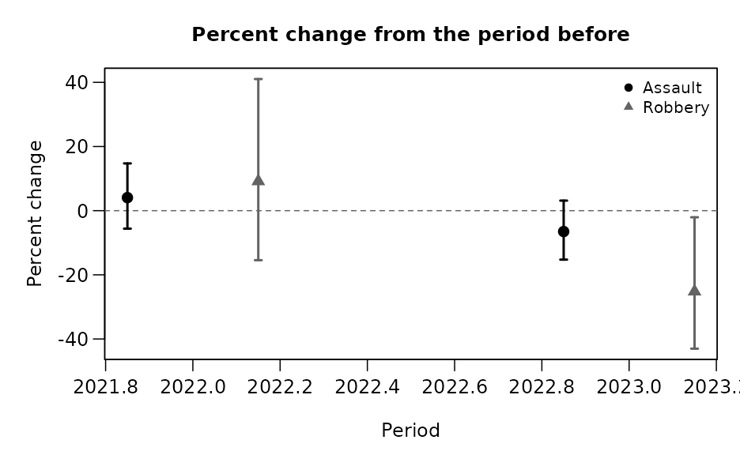

Change tables, drift between releases and region maps
Source:vignettes/change-tables-and-drift.Rmd
change-tables-and-drift.RmdYear-over-year tables in several formats, tests that a new release of data still looks like the last, and checks of a region map.
Each section is one help page: what the function is for, the example
of its help page as it runs, and the plot of its result where the
package draws one. ?name gives the arguments and the value
in full.
Change tables out
Label the periods of a change table without changing them
yoylbl(), fylbl(): A period’s value and its
name are not the same thing: a fiscal year keyed by the year it ends
(2023 for the year that runs from 2022 into 2023) printed as “2023”
names a calendar year the row is not about. yoylbl() adds a
column perlbl that the writers show in place of the period;
the comparison still runs on the value, so relabelling cannot change an
answer. fylbl() names a fiscal year by the years it
spans.
fylbl(c(2023, 2024))
#> [1] "2022/23" "2023/24"
fylbl(2023, sep = "-", short = FALSE)
#> [1] "2022-2023"
# simulated admissions to custody by fiscal year
y <- yoypx(c(120, 131, 98), 2021:2023)
yoylbl(y, fylbl)
#> yoypx: change on the earlier period
#> prd value prev change pctchg flag pctlo pctup p
#> 2021 120 NA NA NA no earlier period NA NA NA
#> 2022 131 120 11 9.166667 <NA> -15.43629 41.033275 0.52799664
#> 2023 98 131 -33 -25.190840 <NA> -43.01728 -2.059398 0.03423381
#> padj signif perlbl
#> NA NA 2020/21
#> 0.52799664 FALSE 2021/22
#> 0.06846762 FALSE 2022/23
yoylbl(y, c("2023" = "the last year"))
#> yoypx: change on the earlier period
#> prd value prev change pctchg flag pctlo pctup p
#> 2021 120 NA NA NA no earlier period NA NA NA
#> 2022 131 120 11 9.166667 <NA> -15.43629 41.033275 0.52799664
#> 2023 98 131 -33 -25.190840 <NA> -43.01728 -2.059398 0.03423381
#> padj signif perlbl
#> NA NA 2021
#> 0.52799664 FALSE 2022
#> 0.06846762 FALSE the last yearSummarise a change table
yoysmry(): One row per series (per group of a grouped
table): the first and last period with a value, the values there, the
change from the first to the last in percent, the compound rate per
step, and how many of the period-to-period changes went up, down or
nowhere.
# simulated police-reported counts of two offences
d <- data.frame(year = rep(2019:2023, 2),
offence = rep(c("Assault", "Robbery"), each = 5),
n = c(812, 845, 790, 901, 954, 120, 131, 98, 105, 140))
yoysmry(yoypx(d$n, d$year, d$offence))
#> yoysmry: 2 series
#> group from to first last totalpct cagrpct periods up down flat
#> Assault 2019 2023 812 954 17.48768 4.111352 5 3 1 0
#> Robbery 2019 2023 120 140 16.66667 3.928988 5 3 1 0Write a change table as delimited text, JSON or Markdown
yoycsv(), yoytsv(), yoyjs(),
yoymd(): yoycsv() and yoytsv()
write every column of the table, one row per line, numbers with every
digit (the shortest text that reads back as the same number), text as it
is (a code such as 046 stays 046),
TRUE and FALSE as such and missing values as
na; meta lines come first as comments. In CSV
a field holding a comma, a quote or a line break is quoted, and an empty
text field is written as "" so that it stays apart from a
missing value written as empty. A TSV field cannot hold a tab or a line
break, so those become spaces. yoyjs() writes a JSON object
of the meta lines, the summary (yoysmry()) and
the rows, every digit kept. yoymd() writes a Markdown table
for reading, with the values rounded for display and Markdown’s own
characters escaped.
# simulated police-reported counts by offence and year, any agency
d <- data.frame(year = rep(2021:2023, 2),
offence = rep(c("Assault", "Robbery"), each = 3),
n = c(812, 845, 790, 120, 131, 98))
y <- yoypx(d$n, d$year, d$offence)
cat(yoycsv(y, meta = "simulated counts"))
#> # simulated counts
#> group,prd,value,prev,change,pctchg,flag,pctlo,pctup,p,padj,signif
#> Assault,2021,812,,,,no earlier period,,,,,
#> Assault,2022,845,812,33,4.064039408866995,,-5.603768879212168,14.72749053634146,0.43180618441086355,0.5279966429637909,FALSE
#> Assault,2023,790,845,-55,-6.508875739644971,,-15.259175908374855,3.136515563139186,0.18170438539856754,0.3634087707971351,FALSE
#> Robbery,2021,120,,,,no earlier period,,,,,
#> Robbery,2022,131,120,11,9.166666666666666,,-15.436293185543326,41.033274698316255,0.5279966429637909,0.5279966429637909,FALSE
#> Robbery,2023,98,131,-33,-25.19083969465649,,-43.01727965764448,-2.0593979283887176,0.03423381228214208,0.13693524912856833,FALSE
cat(yoymd(y))
#> | group | prd | value | previous | change | change % | interval | note |
#> | ------- | ---- | ----: | -------: | -----: | -------: | -----------: | ----------------- |
#> | Assault | 2021 | 812 | — | — | — | | no earlier period |
#> | Assault | 2022 | 845 | 812 | 33 | +4.1% | [-6%, +15%] | |
#> | Assault | 2023 | 790 | 845 | -55 | -6.5% | [-15%, +3%] | |
#> | Robbery | 2021 | 120 | — | — | — | | no earlier period |
#> | Robbery | 2022 | 131 | 120 | 11 | +9.2% | [-15%, +41%] | |
#> | Robbery | 2023 | 98 | 131 | -33 | -25.2% | [-43%, -2%] | |
# simulated admissions to custody, with a code that must stay "046"
a <- data.frame(code = c("046", "112"), n = c(1 / 3, 2))
cat(yoytsv(a))
#> code n
#> 046 0.3333333333333333
#> 112 2
cat(yoyjs(y, pretty = FALSE))
#> {"summary":[{"group":"Assault","from":2021,"to":2023,"first":812,"last":790,"totalpct":-2.7093596059113323,"cagrpct":-1.3639820379549805,"periods":3,"up":1,"down":1,"flat":0},{"group":"Robbery","from":2021,"to":2023,"first":120,"last":98,"totalpct":-18.333333333333336,"cagrpct":-9.63038858849361,"periods":3,"up":1,"down":1,"flat":0}],"rows":[{"group":"Assault","prd":2021,"value":812,"prev":null,"change":null,"pctchg":null,"flag":"no earlier period","pctlo":null,"pctup":null,"p":null,"padj":null,"signif":null},{"group":"Assault","prd":2022,"value":845,"prev":812,"change":33,"pctchg":4.064039408866995,"flag":null,"pctlo":-5.603768879212168,"pctup":14.72749053634146,"p":0.43180618441086355,"padj":0.5279966429637909,"signif":false},{"group":"Assault","prd":2023,"value":790,"prev":845,"change":-55,"pctchg":-6.508875739644971,"flag":null,"pctlo":-15.259175908374855,"pctup":3.136515563139186,"p":0.18170438539856754,"padj":0.3634087707971351,"signif":false},{"group":"Robbery","prd":2021,"value":120,"prev":null,"change":null,"pctchg":null,"flag":"no earlier period","pctlo":null,"pctup":null,"p":null,"padj":null,"signif":null},{"group":"Robbery","prd":2022,"value":131,"prev":120,"change":11,"pctchg":9.166666666666666,"flag":null,"pctlo":-15.436293185543326,"pctup":41.033274698316255,"p":0.5279966429637909,"padj":0.5279966429637909,"signif":false},{"group":"Robbery","prd":2023,"value":98,"prev":131,"change":-33,"pctchg":-25.19083969465649,"flag":null,"pctlo":-43.01727965764448,"pctup":-2.0593979283887176,"p":0.03423381228214208,"padj":0.13693524912856833,"signif":false}]}
plot(y)
Render a change table to HTML or PDF
yoyhtml(), yoypdf(): yoyhtml()
writes one self-contained HTML page (every style inlined, nothing
fetched, so the file renders the same years later): the table, a card
per series with its change over the span (yoysmry()) and
the notes. yoypdf() writes a PDF of the table, paginated
when it does not fit, with the standard Helvetica font and no other
program: crimlab writes the file itself.
# simulated police-reported counts by offence and year, any agency
d <- data.frame(year = rep(2021:2023, 2),
offence = rep(c("Assault", "Robbery"), each = 3),
n = c(812, 845, 790, 120, 131, 98))
y <- yoypx(d$n, d$year, d$offence)
f <- tempfile(fileext = ".html")
yoyhtml(y, f, title = "Reported offences (simulated)", better = "lower")
g <- tempfile(fileext = ".pdf")
yoypdf(y, g, title = "Reported offences (simulated)")
# simulated days in segregation by fiscal year
s <- yoylbl(yoypx(c(4100, 3900, 4400), 2021:2023), fylbl)
yoyhtml(s, f, title = "Days in segregation (simulated)", better = "lower")
unlink(c(f, g))
plot(y)
Write a change table in the format its file name says
yoywr(): Picks the writer from the extension of
file (.html or .htm,
.pdf, .csv, .tsv or
.tab, .json, .md or
.markdown), or from format, and passes the
other arguments to it.
# simulated police-reported counts by offence and year
y <- yoypx(c(812, 845, 790), 2021:2023)
f <- tempfile(fileext = ".csv")
yoywr(y, f)
readLines(f)
#> [1] "prd,value,prev,change,pctchg,flag,pctlo,pctup,p,padj,signif"
#> [2] "2021,812,,,,no earlier period,,,,,"
#> [3] "2022,845,812,33,4.064039408866995,,-5.603768879212168,14.72749053634146,0.43180618441086355,0.43180618441086355,FALSE"
#> [4] "2023,790,845,-55,-6.508875739644971,,-15.259175908374855,3.136515563139186,0.18170438539856754,0.3634087707971351,FALSE"
unlink(f)Drift between releases
Two-sample Kolmogorov-Smirnov test (C backend)
drftks(): Tests whether two numeric samples come from
the same distribution, for example a column of last year’s release of a
table and the same column of this year’s. It needs no assumption about
the shape of either distribution and reacts to any kind of change: a
shift, a change in spread or a change in shape.
set.seed(1)
ref <- stats::rnorm(200)
drftks(ref, stats::rnorm(200))
#> drftks: statistic = 0.0600, p_value = 0.8643, neff = 100.0000
#> inputs: nx = 200, ny = 200
drftks(ref, stats::rnorm(200, mean = 0.8))
#> drftks: statistic = 3.250e-01, p_value = 1.338e-09, neff = 1.000e+02
#> inputs: nx = 200, ny = 200
drftks(ref, stats::rnorm(200, sd = 2.5))
#> drftks: statistic = 3.150e-01, p_value = 4.813e-09, neff = 1.000e+02
#> inputs: nx = 200, ny = 200
drftks(ref, ref)[["statistic"]]
#> [1] 0
# simulated monthly counts of an offence in two releases
drftks(c(41, 38, 52, 47, 44, 50), c(41, 38, 52, 47, 61, 66))
#> drftks: statistic = 0.3333, p_value = 0.8928, neff = 3.0000
#> inputs: nx = 6, ny = 6Population stability index and Jensen-Shannon divergence (C backend)
drftpsi(): Two effect sizes of how far the distribution
of a numeric column has moved from a reference sample. Both samples are
binned on the reference’s quantiles and the two sets of bin shares
compared. Unlike a p-value they do not grow with the sample size, so
they say how large a shift is rather than whether it is detectable.
set.seed(2)
ref <- stats::rnorm(500)
drftpsi(ref, stats::rnorm(500))
#> drftpsi: psi = 0.022072, jsdiv = 0.002753
#> inputs: nx = 500, ny = 500, bins = 10
drftpsi(ref, stats::rnorm(500, mean = 1))
#> drftpsi: psi = 0.9543, jsdiv = 0.1053
#> inputs: nx = 500, ny = 500, bins = 10
drftpsi(ref, ref)
#> drftpsi: psi = 0, jsdiv = 0
#> inputs: nx = 500, ny = 500, bins = 10
drftpsi(c(1, 1, 1), c(9, 9, 9))[["jsdiv"]] <= log(2)
#> [1] TRUE
drftpsi(ref, stats::rnorm(500, mean = 1), bins = 4, eps = 0.01)
#> drftpsi: psi = 0.69315, jsdiv = 0.08235
#> inputs: nx = 500, ny = 500, bins = 4
try(drftpsi(ref, ref, bins = 1))
#> Error : drftpsi: `bins` must be one whole number of at least 2.Chi-square test of a categorical column against a known distribution
drftchisq(): Tests whether the category counts of a new
sample agree with a reference distribution taken as known (proportions
fixed by a specification, or a published breakdown): Pearson’s
chi-square goodness-of-fit test. When the reference is itself a sample,
use drfthomog(), which carries the reference’s own sampling
error.
ref <- c(a = 50, b = 30, c = 20)
drftchisq(c(a = 100, b = 60, c = 40), ref)
#> drftchisq: statistic = 0, df = 2, p_value = 1, logpvalue = 0
#> inputs: n = 200, k = 3
drftchisq(c(a = 40, b = 60, c = 100), ref)
#> drftchisq: statistic = 1.26e+02, df = 2.00e+00, p_value = 4.36e-28, logpvalue = -6.30e+01
#> inputs: n = 200, k = 3
drftchisq(c("a", "a", "b", "b"), c("a", "b"))
#> drftchisq: statistic = 0, df = 1, p_value = 1, logpvalue = 0
#> inputs: n = 4, k = 2
drftchisq(c("a", "a", "b", "d"), c("a", "a", "b", "b"))
#> drftchisq: statistic = Inf, df = 1, p_value = 0, logpvalue = -Inf
#> inputs: n = 4, k = 3Chi-square test of homogeneity of two categorical samples
drfthomog(): Tests whether two samples of a categorical
variable (offence type, region, race in last year’s and this year’s
release) were drawn from the same distribution, by Pearson’s chi-square
on the 2-by-k table of their counts.
set.seed(1)
a <- sample(c("x", "y", "z"), 300, TRUE)
b <- sample(c("x", "y", "z"), 300, TRUE)
drfthomog(a, b)
#> drfthomog: statistic = 0.5150, df = 2.0000, p_value = 0.7730, logpvalue = -0.2575
#> inputs: nx = 300, ny = 300, k = 3
#> method: chi-square approximation
drfthomog(a, sample(c("x", "y", "z"), 300, TRUE, prob = c(0.7, 0.2, 0.1)))
#> drfthomog: statistic = 6.978e+01, df = 2.000e+00, p_value = 7.030e-16, logpvalue = -3.489e+01
#> inputs: nx = 300, ny = 300, k = 3
#> method: chi-square approximation
drfthomog(c(a = 30, b = 20), c(a = 25, b = 25))
#> drfthomog: statistic = 1.0101, df = 1.0000, p_value = 0.3149, logpvalue = -1.1556
#> inputs: nx = 50, ny = 50, k = 2
#> method: chi-square approximation
attr(drfthomog(c(a = 3, b = 1, c = 2), c(a = 1, b = 4, c = 1)), "method")
#> [1] "Monte Carlo permutation (small expected counts)"
try(drfthomog(c(1, 2), c(a = 3)))
#> Error : drfthomog: a numeric `x` must be named.Region maps
Internal soundness of a region map
rgnmapintg(): Checks that a region map (a crosswalk from
units, such as correctional facilities or police detachments, to the
statistical regions that contain them) lists each unit once, gives every
unit a region, and names only regions the reference geography knows. Run
it on any crosswalk before tables are built on it.
# a simulated crosswalk of facilities to census divisions
cw <- data.frame(inst = c("North Jail", "South Jail", "East Jail"),
cd = c("3557", "3520", "3506"))
rgnmapintg(cw, "inst", "cd", regs = c("3557", "3520", "3506"))
#> rgnmapintg: every check passed
#> check observed expected pass
#> units assigned more than one region 0 0 TRUE
#> units assigned no region 0 0 TRUE
#> region codes not in the reference geography 0 0 TRUE
cw$cd[3] <- "2406"
rgnmapintg(cw, "inst", "cd", regs = c("3557", "3520", "3506"))
#> rgnmapintg: 1 of 3 checks failed
#> check observed expected pass
#> units assigned more than one region 0 0 TRUE
#> units assigned no region 0 0 TRUE
#> region codes not in the reference geography 1 0 FALSE
cw2 <- rbind(cw, data.frame(inst = c("North Jail", "West Jail"),
cd = c("3560", "")))
rgnmapintg(cw2, "inst", "cd")
#> rgnmapintg: 2 of 2 checks failed
#> check observed expected pass
#> units assigned more than one region 1 0 FALSE
#> units assigned no region 1 0 FALSE
try(rgnmapintg(cw, "institution", "cd"))
#> Error : rgnmapintg: `map` has no column `institution`.Compare a recomputed region map against a published one
rgnmapcmp(): Matches two region maps on the unit and
compares the named columns cell by cell, reporting for each column how
many cells disagree and the first disagreement. Use it to confirm that a
region map rebuilt from a boundary file reproduces the one that was
published.
pub <- data.frame(inst = c("North Jail", "South Jail"),
cd = c("3557", "3520"))
obs <- pub
obs$cd[2] <- "3521"
rgnmapcmp(pub, obs, "inst")
#> rgnmapcmp: the maps disagree
#> column cells mismatched first
#> rows 2 0
#> cd 2 1 South Jail: published 3520, recomputed 3521
pub$lat <- c(44.39, 43.65)
obs2 <- data.frame(inst = c("North Jail", "Hill Jail"),
cd = c("3557", "3506"), lat = c(44.39 + 1e-12, 45.1))
rgnmapcmp(pub, obs2, "inst", cols = c("cd", "lat"))
#> rgnmapcmp: the maps disagree
#> column cells mismatched first
#> rows 3 2 published only: South Jail
#> cd 1 0
#> lat 1 0
try(rgnmapcmp(pub, obs, "inst", cols = "lat"))
#> Error : rgnmapcmp: both frames need the compared columns; missing: lat.Check a region map against an independently derived assignment
rgnmapalt(): Compares the region each unit was assigned
with the region a different method assigns it (a name lookup, a postal
geography, an administrative list), and marks the disagreements that are
already known and explained. This is the only check here that can catch
an error in the method that built the map, because it does not use that
method.
cw <- data.frame(inst = c("North Jail", "South Jail", "Hill Jail"),
cd = c("3557", "3520", "3506"))
route <- c("North Jail" = "3557", "South Jail" = "3521",
"Hill Jail" = "3519")
d <- rgnmapalt(cw, "inst", "cd", route, known = "Hill Jail")
d
#> unit primary second known
#> 1 South Jail 3520 3521 FALSE
#> 2 Hill Jail 3506 3519 TRUE
sum(!d$known)
#> [1] 1
try(rgnmapalt(cw, "inst", "cd", c("3557", "3520")))
#> Error : rgnmapalt: `route` must be named by unit, or be a data frame.